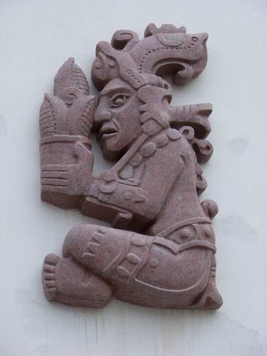
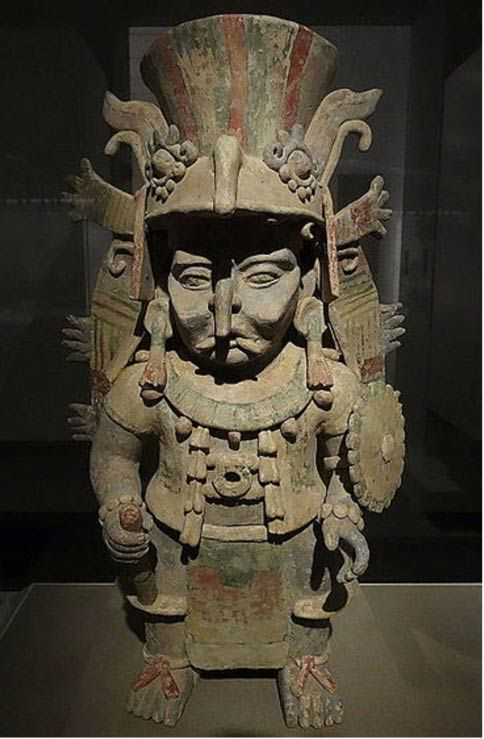
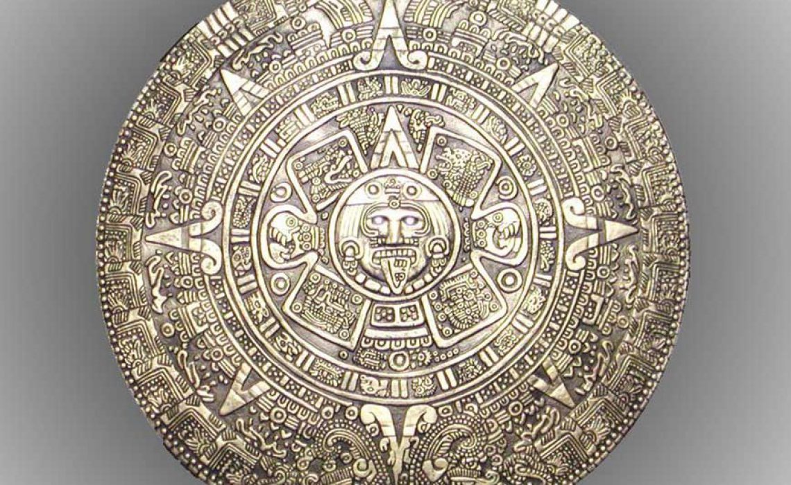

Mayar

Lítið er mikið vitað fyrir víst um hin fornu Maya samfélög en fyrstu ummerki um menningu Maya er hægt að rekja alla leið til sirka 2600 fyrir krist. Um þennan tíma byrjuðu lítil landbúnaðar samfélög að myndast og fundist hafa ummerki um að Mayar hafi byrjað að jarða fólk undir húsum sínum um þennan tíma. Maya fólkið byrjaði að þróast almennilega undir tíma Olmec þjóðarinnar sem hafði mikil áhrif á þróun menningar Maya en þeir bjuggu norðan við Maya fólkið þar sem mexíkósku ríkin Veracruz og Tabasco eru í dag. Maya fólkið byrjaði að byggja upp byggðir sínar um 2000 fyrir krist þar sem í dag er Yucatan svæðið í Mexíkó. Maya fólkið bjó ekki í einu ríki heldur voru þeir meira eins og samansafn af mörgum þjóðum sem höfðu öll sinn konung og aðra leiðtoga en allir voru þeir svipaðir menningarlega. Mayar byrjuðu ekki að byggja upp stór og mikil borgríki fyrr en um árið 250 e.kr en þá byrjuðu þeir að byggja stórar og miklar borgir út um alla Yucatan skagann. Flestar borgir Maya fólksins voru með stórt og mikið hof og hallir í miðborginni og svo byggðu þeir íbúahverfi í kringum það. Maya fólkinu var skipt í tvær stéttir, alþýðan og Elítan. Elíta Maya fólksins var læs og kunni að skrifa en þeir notuðu háþróað myndletur en þeir eru einnig ábyrgir fyrir því að búa til 365 daga langa dagatalið sem er svipað og það sem almennt er notað í dag og miðast það við staðsetninu okkar í sólkerfinu þó að þeir hafi ekki talið hlaupaárið með. Maya fólkið voru miklir stríðsmenn en ekki er vitað hvernig bardagar þeirra fóru nákvæmlega fram, nema það sem fornar styttur maya og myndletur þeirra hafa sagt okkur. Talið er að Maya fólkið hafi oftar en ekki ráðist á borgir og verslunarleiðir óvina sinna aðeins til þess að útrýma þeim frekar en að ræna af þeim borgunum eða öðrum verðmætum. Maya samfélög voru höfðu það öll sameiginlegt að vera öll byggð á akuryrkju en þeir ræktuðu aðallega maís og margt fleira en kjötneysla Maya fólksins var lítil. Maya fólkið tilbáðu guð maísins og færðu honum oft fórnir fyrir betri uppskeru.

Trúarbrögð Maya
Mayar trúðu á marga guði og eru þeir taldir vera í kringum 150-250. Maya fólkið bjó til dagatal sem heitir Tzolk’in og var 260 daga langt og var mest notað til þess að skipuleggja trúarlega viðburði og athafnir. Mikilvægustu og vinsælustu guðirnir meðal Maya fólksins voru Itzamna, Ix Chel, Chaac, Kinich Ahau og Yum Cimil. Itzamna er talinn hafa verið guð himinsins, næturs og dags og er talinn hafa verið eiginmaður Ix Chel sem var gyðja tunglsins, veðurs, frjóvgunar, barna og heilsu. Kinich Ahau er guð Sólarinnar en talið er að í sumum útgáfum af trú Maya eru Kinich Ahau og Itzamna sami guðinn. Einn mikilvægasti guð Maya fólksins var kallaður Chaac og er guð regnsins. Maya fólkið trúði því að Chaac notaði eldingar exi sína til þess að búa til eldingar og rigningu. Maya fólkið hélt oft trúarlega athöfn sem er kölluð Yucatec Ch’a Cháak fyrir regnguðinn Chaak þar sem fjórir piltar voru látnir leika froska til þess að biðja Chaac um að gefa þeim rigningu.
Dagatal Maya
Maya þjóðirnar voru með þrjú dagatöl sem þjónuðu öll sínum tilgangi. Aðal dagatalið sem notað var hét Haab og var 365 daga langt með mánuðum skipt í 20 daga með einum mánuði sem var 5 dagar. Mayar voru einnig með dagatal sem hét Tzolk’in og var 260 daga langt. Þetta dagatal var mest notað til þess að skipuleggja trúarlega viðburði og athafnir. Síðasta dagatalið var sirka 5125 ára langt þar sem Mayar trúðu því að heimurinn endi á 5125 ára fresti og svo endurskapaður.